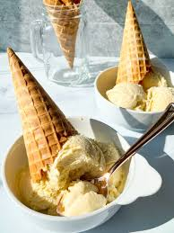

Custard Ice Cream
Home

Description:
We'll show you how to make vanilla custard ice cream that is so good, you'll fall in love after the first scoop!
When the craving hits, there’s nothing more satisfying than a bowl of custard ice cream. And while store-bought ice cream is a good go-to to have stocked in your freezer, it’s even more fun to pull out your very own homemade vanilla custard ice cream and sprinkle on your favorite ice cream toppings.
Thick, creamy and packed with real vanilla, this custard ice cream recipe can’t be beat. We’re willing to bet that after one scoop, you’ll be hooked.
Ingredients:
- 2 cups heavy whipping cream
- 2 cups 2% milk
- 3/4 cup sugar
- 1/8 teaspoon salt
- 1 vanilla bean
- 6 large egg yolks
Steps:
- In a large heavy saucepan, combine cream, milk, sugar and salt. Split vanilla bean in half lengthwise. With a sharp knife, scrape seeds into pan; add bean. Heat cream mixture over medium heat until bubbles form around side of pan, stirring to dissolve sugar.
- In a bowl, whisk a small amount of the hot mixture into the egg yolks; return all to the pan, whisking constantly. Cook over low heat until mixture is just thick enough to coat a metal spoon and temperature reaches 180°, stirring constantly. Do not allow to boil. Immediately transfer the mixture to a bowl.
- Place bowl in a pan of ice water. Stir gently and occasionally for 2 minutes; discard vanilla bean. Press waxed paper onto surface of mixture. Refrigerate several hours or overnight.
- Fill cylinder of ice cream maker two-thirds full; freeze according to the manufacturer’s directions. (Refrigerate remaining mixture until ready to freeze.) Transfer ice cream to a freezer container; freeze until firm, 4-6 hours. Repeat with remaining mixture.